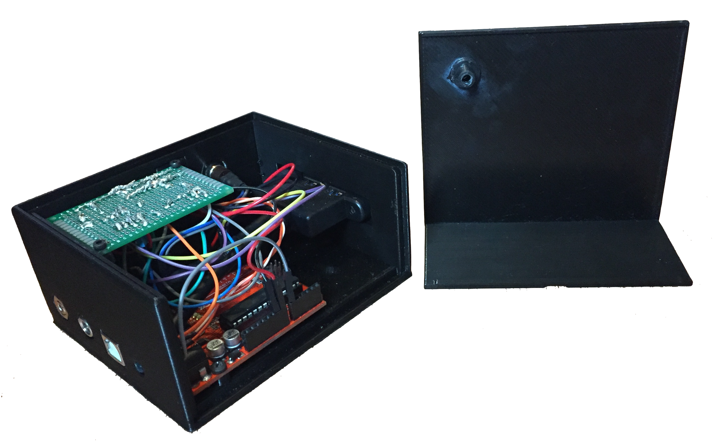

Neopixel Boom Box
August 2017
Project Overview
I designed an improved version of this control box that houses an Arduino Uno and all the electronics required to power a Neopixel LED strip and make the lights react to music in exciting ways. The box is very portable--setting it up requires only a standard 5V power supply with a barrel connector, an aux cord for the music supply, and the Neopixel strip, connected easily with a USB cable. The Arduino runs a program I wrote that cycles between a dozen different display programs with a button push. The different programs control the LED colors and behavior in response to the beat of the music or amplitude of different frequencies. Check out the video below!
I was very pleased how the first control box turned out, but several issues became apparent quickly. The most important was the subpar response to music using the microphone, as well as several issues that inconvenienced using the system. With those issues in mind, I aimed to make improvements in a few places:
- Microphone: The sound impact sensor I used for the original version couldn't pick up beats in a song as well as I hoped. Background noise severely affected its performance and it had a narrow window between never triggering and constantly on.
- Neopixel connection: I used the 2pin JST connectors that came with the Neopixels to connect the strip to the original box. I found the connectors were fragile and difficult to disconnect and reconnect often.
- IR control: The IR sensor I used wasn't as reliable as I hoped, and I rarely used the remote to control the box.
- Housing design: The old lid slid out over the cables connecting the LED strip, which made opening the box with the strip attached impossible. I also wanted the new version to be thicker and allow more room for wiring inside.

Instead of the sound impact sensor's microphone, the new system takes the audio signal directly from one channel of a 3.5mm jack connected to an audio source. The core of the new system's music response is the MSGEQ7 chip which takes the audio signal as input. The IC outputs a 1x7 array of values to be read by an Arduino digital pin. Each value corresponds to the amplitude at each of 7 frequencies ranging from deep base to high treble. The audio passes through a variable amplifier (a non-inverting op-amp with a potentiometer to vary the amplification factor) before the chip to ensure the signal can be adjusted to a proper range for manipulation regardless of the audio source volume. The signal amplification can be changed with the large black knob on the front of the box.

Hardware Changes
I changed the JST connectors to USB 3.0 to make the strip more easily removable. USB 3.0 has more wires than USB 2.0, allowing the cable and connectors to support the current drawn by the LEDs. Switching between programs is now done by cycling a push button on the box front panel. This is more reliable than using an IR sensor and well-suited to how I use the system--I don't switch between programs very often. Finally, the new box is larger with thicker walls than the old box. The lid now removes to expose the top and one entire side. Lips and recesses in the main box position it, and a screw from the bottom of the box holds the lid secure.
Software Changes
The cycler button can reliably switch between patterns, so I combined all the LED patterns into one Arduino program. The main loop of the Arduino code checks if the button has been pressed and keeps track of the current active pattern. A case structure within this main loop contains all timing functions for different patterns and calls sub-functions that read the audio signal and set the colors for the strip to display. Each press of the button causes the next pattern to be displayed on the strip.
Version 1
January - March 2016
I recently bought several meters of Neopixel LED strip lights from Adafruit and have been playing around with them and my Arduino. Expanding upon sample code provided by Adafruit, I programmed the strip to flash and react to music using a microphone connected to the Arduino. I also designed and 3D printed a box to house all the electronics, detailed below.
The LED strip looked awesome but the wiring setup was definitely temporary and rather fragile, as you can see in the wiring picture above. I decided to build a more permanent enclosure for the wiring setup. I had a few design goals in mind:
- Able to "plug and play" - easily connect and disconnect all necessary wires
- IR control to switch between flashing modes
- Removable box lid
- Simple on/off control
Below are some initial concepts I sketched up.
From these drawings I completed the first CAD iteration below. This basic model included the top slides and latches and several component holes, but did not yet include all component walls, properly sized screw holes or several internal breakout board supports. It was also slightly longer than the final design.
Before finalizing the design and printing the box, I printed two test parts, shown below. The purpose of the skinny box was to test the tolerances and feel of the top slides and latches. I varied the dimensions of the latches on each side to get a feel for what I wanted the final version to be. Unlike the right latch, which is the full lid thickness and separated from the rest of the lid by an open gap, the left side latch is only half the thickness of the lid. The gap is covered by a layer of ABS underneath to hide the internals. The box also has a hole to test the fit of the panel-mount DC power jack and on/off switch. The box came out great. Tolerances of ~0.015" around the DC jack and switch, and slightly tighter on the lid slides, produced good fits. The thinner latch and covered switch functioned well and looked far better than the exposed gap. The only major necessary change was extending the lid slides; the short rails in the design below made it difficult to slide the lid in at the proper height and angle.
The thin rectangular piece has holes to test the fit of each of the components included in the box: 5mm LED, IR Receiver, JST SM plug, microphone, and sound impact sensor board. The pegs designed to grip the sound impact board were not flexible enough (and I actually snapped them off) and the JST SM plug fixture was too small, but all the others holes fit their components well. Time for the final design!
I integrated the above changes into the final design, rearranged components to shorten the box, and printed the final box and lid. After many hours of sanding and soldering, the empty box below became a fully working model complete with sound sensitivity and IR control (from a TV remote).